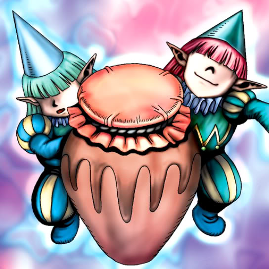

Supporter in the Shadows

Description: "When this card is flipped face-up, all WARRIOR monsters are increased 300 points."
STATS
ATK: 1000
DEF: 1000DECK COST
Deck Cost per Card: 25EFFECT NOT IMPLEMENTED
Fusion List (10 Possible Fusions)
- Supporter in the Shadows + Ancient Jar = Minomushi Warrior
- Supporter in the Shadows + Arlownay = Bean Soldier
- Supporter in the Shadows + Darkworld Thorns = Bean Soldier
- Supporter in the Shadows + Embryonic Beast = Tiger Axe
- Supporter in the Shadows + Fire Eye = Charubin the Fire Knight
- Supporter in the Shadows + Griggle = Bean Soldier
- Supporter in the Shadows + Mystical Sheep #1 = Tiger Axe
- Supporter in the Shadows + Petit Dragon = Dragon Statue
- Supporter in the Shadows + The Judgement Hand = Judge Man
- Supporter in the Shadows + Wing Egg Elf = Celtic Guardian